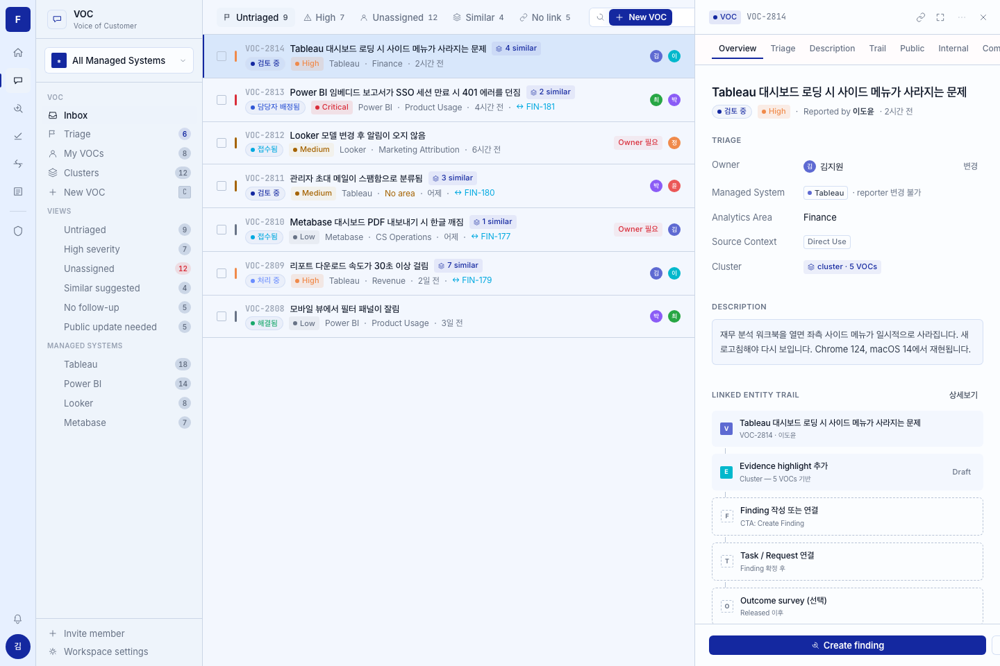
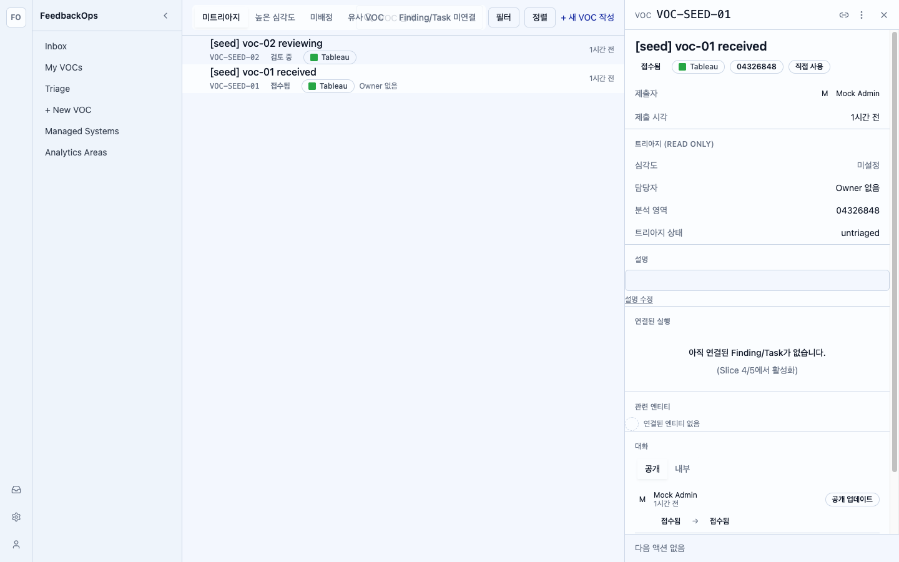

| # | Severity | Category | Issue | Scope |
|---|---|---|---|---|
| 1 | MEDIUM | Theme | Light(Pack 17) vs prototype dark(Pack 20). ADR-0021 locks Pack 17 light as current authority — prototype hasn't been re-baselined. Largest visual gap. | ADR locked → #55 |
| 2 | LOW | Sidebar | No Managed System scope filter list in sidebar (prototype has MS list as secondary nav). #18 sidebar territory. | OOS |
| 3 | LOW | Detail nav | No inner section nav inside Detail panel — prototype has Overview/Triage/Public/Internal/Conversation tabs above sections. Spec §3 explicitly defers section nav to #21. | #21 |
| 4 | LOW | Description | RichContentRenderer renders an empty box when description is empty (seed VOC has no real content). Should fall back to muted '설명 없음' placeholder. | IN — fix in C11 |
| 5 | LOW | Linked entity trail | Prototype shows Evidence/Finding/Task/Outcome cards; impl shows the dashed placeholder. Spec §3.7 defers real node resolution to Slice 4. | Slice 4 |
| 6 | LOW | Next action footer | Prototype shows '+ Create Finding' primary CTA at bottom; impl renders '다음 액션 없음' because BE returns next_actions: [] for fresh VOCs. Behavior-correct per #15. |
BE data |
| 7 | LOW | Row density | Impl row uses single visual line (title + meta inline). Prototype uses 2-line: title prominent (font-medium), meta tight beneath. 60px row height OK. | IN — fix in C11 |
| 8 | LOW | Row severity color | Impl SeverityIndicator visible but very small; prototype has more visible left-edge accent. Could amplify bar width or add a tint to the left edge. | IN — minor C11 |
| 9 | LOW | Tab strip | Tabs blend into row area; prototype has clearer container separation (subtle bg shift between tab bar and rows). | IN — minor C11 |
feedback_pixel_diff_per_page)